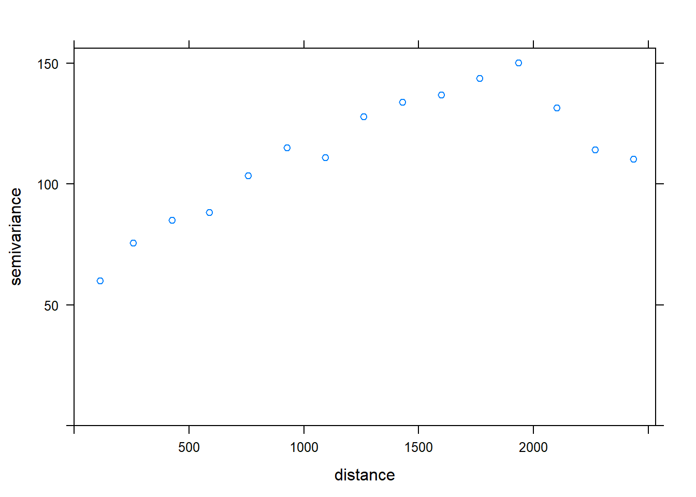
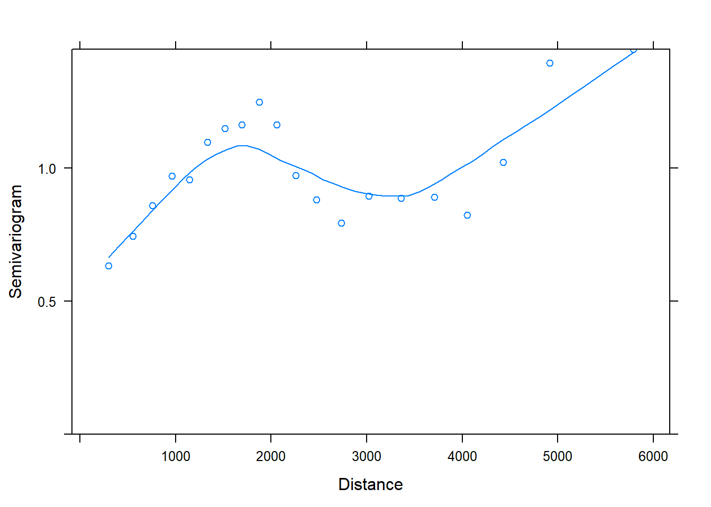

library(tidyverse)
library(car)
library(simr)
library(mvtnorm)
library(RLRsim)
library(sp)
library(gstat)
library(lmerTest)With the fertilizer dataset we looked at within-subject and temporal violations of independence. However, for studies in agriculture we are also interested in understanding how to deal with violations of independence caused by spatially correlated data. In cases where the experiment has been properly designed, with blocking to control for known sources of variation and randomization, spatial correlation should not be considered an issue. However, there are cases where we cannot avoid running experiments without proper designs. For example, when we deal with commercial companies they may not have the correct equipment to run controlled studies divided into subplot (e.g. plot seeder), so the experiment needs to be run on strips. Designing an experiment on strips causes all sorts of problems because we cannot control for external factors such as soil conditions, and to achieve good power for an ANOVA we would still need to replicate the strips a number of times, which may cause an excessive use of space. In such cases we may be forced to use pseudoreplication as a way to still achieve good power while also minimizing the use of field space.
In this example (which was carried out at Harper Adams University in 2017-2018 as an HRP project by Joe Hodgson), we are interested in looking at differences between four treatments and two drilling dates on plant count. Let’s assume we approach this issue as a normal experiment we intend to analysis with linear modelling, i.e. ANOVA. To determine the number of replicates we would perform an a-priori power analysis, assuming a medium effect size. I ran the analysis in G*Power, the output is below:
dat = read.csv("Plant count data.csv", sep=";")
head(dat)## Week DrillingDate Plot SubPlot Treatment Count
## 1 1 D1 Pl1 P1 T1 26
## 2 1 D1 Pl1 P1 T1 36
## 3 1 D1 Pl1 P2 T1 35
## 4 1 D1 Pl1 P2 T1 29
## 5 1 D1 Pl1 P3 T1 34
## 6 1 D1 Pl1 P3 T1 33Power Analysis
If we assume a medium effect size (f=0.25 in the picture, d=0.5), meaning our treatment will have mean values half a standard deviation away from each other, we would need a total of 178 samples. This would clearly be a problem for any experiment, because its size would be too big to be practical. In most cases though in agriculture we have effect sizes that are larger than this, maybe around one full standard deviation of difference between treatments (f=0.5 in the picture). Therefore the sample size requirements are more manageable. The problem is that if we do not have any clue about the actual effect size for our experiment, in the literature (Bausell & Li, 2002) the suggestion would be to use a medium effect size, and therefore run very large experiments.
For this experiment we actually had an indication of the probable effect size from a PhD thesis. On average of all the seeds treatments tested in the thesis the effect size was d=0.7, meaning almost one full standard deviation of difference. If we look back at the previous plot, this would mean an experiment with 24 strips (3 replicates). These are not very many and it would be perfectly feasible to include more blocks. However, running an experiment in strips is still not a proper design. Moreover, for this test we are assuming that the space in the field is limited, so we designed an experiment with only 8 strips, 4 for the first and 4 for the second drilling date. Below is a schematic representation of the design.
Experimental design with pseudoreplication
Each square is an area where plants were counted. The experiment was conducted by counting the number of plants on a weekly basis, starting on the week after emergence.
In a standard experiment, each area will be sampled and then results would be averaged by plot (in this case by strip). Let’s see how to simulate that in R:
Standard.Data = dat %>%
group_by(Treatment, DrillingDate) %>%
summarise(Count = mean(Count))
Standard.Data## # A tibble: 8 x 3
## # Groups: Treatment [?]
## Treatment DrillingDate Count
## <fct> <fct> <dbl>
## 1 T1 D1 35.2
## 2 T1 D2 32.8
## 3 T2 D1 31.3
## 4 T2 D2 30.4
## 5 T3 D1 31.8
## 6 T3 D2 30.2
## 7 T4 D1 29.2
## 8 T4 D2 29.1We have a total of 8 measurement (one for each strip). With this dataset we can apply a normal ANOVA and we will not violate any assumption (even though clearly this is not an ideal design):
mod.st = aov(Count ~ Treatment + DrillingDate, data=Standard.Data)
summary(mod.st)## Df Sum Sq Mean Sq F value Pr(>F)
## Treatment 3 23.841 7.947 15.943 0.0239 *
## DrillingDate 1 3.146 3.146 6.311 0.0868 .
## Residuals 3 1.495 0.498
## ---
## Signif. codes: 0 '***' 0.001 '**' 0.01 '*' 0.05 '.' 0.1 ' ' 1As you can see the omnibus ANOVA (the one that tests the null hypothesis that \(\mu_1=\mu_2=\mu_3=\mu_4\), meaning the four mean values for each treatment come from the same population) returns a significant p-value. I computed the a-posteriori power analysis using the mean square values reported above and the power of this experiment was 0.99. In other words, this experiment, albeit limited in size was able to achieve good power and reliably reject the null hypothesis, at least with a significance below 0.05. However, let’s look at the results of the Tukey multiple comparison:
TukeyHSD(mod.st)## Tukey multiple comparisons of means
## 95% family-wise confidence level
##
## Fit: aov(formula = Count ~ Treatment + DrillingDate, data = Standard.Data)
##
## $Treatment
## diff lwr upr p adj
## T2-T1 -3.108333 -6.515340 0.2986732 0.0635650
## T3-T1 -2.933333 -6.340340 0.4736732 0.0737420
## T4-T1 -4.800000 -8.207007 -1.3929935 0.0195654
## T3-T2 0.175000 -3.232007 3.5820065 0.9935792
## T4-T2 -1.691667 -5.098673 1.7153398 0.2561146
## T4-T3 -1.866667 -5.273673 1.5403398 0.2105209
##
## $DrillingDate
## diff lwr upr p adj
## D2-D1 -1.254167 -2.842938 0.3346051 0.0867692From this table it is clear that among all contrasts, the only significant difference was detected between T1 and T4. Let’s compute the effect size (d, standardized mean differences) to better understand the real power of the experiment:
ES.Data = as.data.frame(Standard.Data)
Control = ES.Data[ES.Data$Treatment=="T4","Count"]
Treatment1 = ES.Data[ES.Data$Treatment=="T1","Count"]
numerator = (mean(Treatment1)-mean(Control))
denominator = sqrt((((length(Treatment1)-1)*sd(Treatment1)^2)+((length(Control)-1)*sd(Control)^2))/(length(Treatment1)+length(Control)-2))
numerator/denominator## [1] 3.943726The only difference that the model above was capable of detecting was two mean values separated by 4 standard deviations. However, if we look at the effect size between T1 and T2:
Control = ES.Data[ES.Data$Treatment=="T2","Count"]
Treatment1 = ES.Data[ES.Data$Treatment=="T1","Count"]
numerator = (mean(Treatment1)-mean(Control))
denominator = sqrt((((length(Treatment1)-1)*sd(Treatment1)^2)+((length(Control)-1)*sd(Control)^2))/(length(Treatment1)+length(Control)-2))
numerator/denominator## [1] 2.379855We can clearly see that even this difference is quite large. In other words, the experiment we ran above was powered only to reliably distinguish between mean values separated by four standard deviation, which is massive effect size, that would be clearly detectable with a naked eye in the field, so probably there would be no need to run a formal test.
Let’s now try to analyse this dataset as a repeated measure experiment. We can average values by plot using the following lines:
Temporal.Data = dat %>%
group_by(Treatment, DrillingDate, Week, Plot) %>%
summarise(Count = mean(Count))
Temporal.Data## # A tibble: 40 x 5
## # Groups: Treatment, DrillingDate, Week [?]
## Treatment DrillingDate Week Plot Count
## <fct> <fct> <int> <fct> <dbl>
## 1 T1 D1 1 Pl1 35.9
## 2 T1 D1 2 Pl1 35.8
## 3 T1 D1 3 Pl1 35.0
## 4 T1 D1 4 Pl1 34.4
## 5 T1 D1 5 Pl1 34.8
## 6 T1 D2 1 Pl5 23.4
## 7 T1 D2 2 Pl5 32.8
## 8 T1 D2 3 Pl5 35.3
## 9 T1 D2 4 Pl5 36.1
## 10 T1 D2 5 Pl5 36.1
## # ... with 30 more rowsNow we can use the function lme to fit a mixed effect model:
mod.tp = lme(Count ~ Treatment + DrillingDate, random = ~ 1|Plot, data=Temporal.Data, method="REML")
summary(mod.tp)## Linear mixed-effects model fit by REML
## Data: Temporal.Data
## AIC BIC logLik
## 198.052 208.9395 -92.02602
##
## Random effects:
## Formula: ~1 | Plot
## (Intercept) Residual
## StdDev: 0.0001308318 2.845976
##
## Fixed effects: Count ~ Treatment + DrillingDate
## Value Std.Error DF t-value p-value
## (Intercept) 34.59375 1.0062044 32 34.38044 0.0000
## TreatmentT2 -3.10833 1.2727591 3 -2.44220 0.0923
## TreatmentT3 -2.93333 1.2727591 3 -2.30470 0.1045
## TreatmentT4 -4.80000 1.2727591 3 -3.77133 0.0326
## DrillingDateD2 -1.25417 0.8999766 3 -1.39355 0.2577
## Correlation:
## (Intr) TrtmT2 TrtmT3 TrtmT4
## TreatmentT2 -0.632
## TreatmentT3 -0.632 0.500
## TreatmentT4 -0.632 0.500 0.500
## DrillingDateD2 -0.447 0.000 0.000 0.000
##
## Standardized Within-Group Residuals:
## Min Q1 Med Q3 Max
## -3.4866483 -0.2100920 0.1134643 0.4791122 1.3798723
##
## Number of Observations: 40
## Number of Groups: 8The summary tables tells us that Plot can explain very little of the variance in the dataset, and the p-values are still only significant between T1 (reference level not shown) and T4. I ran a power analysis that concluded we needed at least 12 measurement (in total) to detect the difference between T1 and T2, despite it being very large.
Drilling date also appears not significant. We can again run a power analysis to understand the average differences between drilling dates:
ES.Data = as.data.frame(Temporal.Data)
Control = ES.Data[ES.Data$DrillingDate=="D2","Count"]
Treatment1 = ES.Data[ES.Data$DrillingDate=="D1","Count"]
numerator = (mean(Treatment1)-mean(Control))
denominator = sqrt((((length(Treatment1)-1)*sd(Treatment1)^2)+((length(Control)-1)*sd(Control)^2))/(length(Treatment1)+length(Control)-2))
numerator/denominator## [1] 0.3852655In this case average differences between drilling dates are relatively small, less than half a standard deviation, which is clearly too small to be detectable with such a small experiment. However, let’s what happens if we include the pseudoreplicate. For this model we need to use the package lme4 because its optimisation algorithm is better for complex models:
full.lme = lmer(Count ~ Treatment + DrillingDate + (factor(Week)|Plot), data=dat)
summary(full.lme)## Linear mixed model fit by REML t-tests use Satterthwaite approximations
## to degrees of freedom [lmerMod]
## Formula: Count ~ Treatment + DrillingDate + (factor(Week) | Plot)
## Data: dat
##
## REML criterion at convergence: 2613.6
##
## Scaled residuals:
## Min 1Q Median 3Q Max
## -4.0890 -0.5006 0.0090 0.5936 3.7554
##
## Random effects:
## Groups Name Variance Std.Dev. Corr
## Plot (Intercept) 41.91 6.474
## factor(Week)2 30.21 5.496 -0.99
## factor(Week)3 45.07 6.714 -1.00 1.00
## factor(Week)4 38.84 6.232 -1.00 0.99 1.00
## factor(Week)5 38.04 6.168 -1.00 0.99 1.00 1.00
## Residual 12.76 3.572
## Number of obs: 480, groups: Plot, 8
##
## Fixed effects:
## Estimate Std. Error df t value Pr(>|t|)
## (Intercept) 34.8301 0.4339 22.8876 80.281 < 2e-16 ***
## TreatmentT2 -3.6376 0.5488 22.8876 -6.629 9.43e-07 ***
## TreatmentT3 -3.2506 0.5488 22.8876 -5.923 4.97e-06 ***
## TreatmentT4 -5.3814 0.5488 22.8876 -9.806 1.16e-09 ***
## DrillingDateD2 0.9583 0.3881 22.8876 2.470 0.0214 *
## ---
## Signif. codes: 0 '***' 0.001 '**' 0.01 '*' 0.05 '.' 0.1 ' ' 1
##
## Correlation of Fixed Effects:
## (Intr) TrtmT2 TrtmT3 TrtmT4
## TreatmentT2 -0.632
## TreatmentT3 -0.632 0.500
## TreatmentT4 -0.632 0.500 0.500
## DrillngDtD2 -0.447 0.000 0.000 0.000Now the random effects can explain a lot of the variance in the data, and the p-values are all significant, meaning that this model can detect difference between T1 (reference level not shown) and all the other. This model also reports a significant p-value for drilling date D2, but we will see later on that the power for detecting such a small effect size is still low.
To compute the power of this model we can use the function powerSim in the package simr. Since it is based on a simulation it takes a while to compute the results, and the more complex is the model to slowest the computation will become:
powerSim(full.lme, fixed("Treatment", "lr"), nsim=50, progress=F)## Power for predictor 'Treatment', (95% confidence interval):
## 98.00% (89.35, 99.95)
##
## Test: Likelihood ratio
##
## Based on 50 simulations, (18 warnings, 0 errors)
## alpha = 0.05, nrow = 480
##
## Time elapsed: 0 h 0 m 50 s
##
## nb: result might be an observed power calculationClearly this model has full power to detect the effect of treatment. We can compute power to detect specific contrasts using the following line:
powerSim(full.lme, fixed("TreatmentT2", "z"), nsim=50, progress=F)## Power for predictor 'TreatmentT2', (95% confidence interval):
## 100.0% (92.89, 100.0)
##
## Test: z-test
## Effect size for TreatmentT2 is -3.6
##
## Based on 50 simulations, (14 warnings, 0 errors)
## alpha = 0.05, nrow = 480
##
## Time elapsed: 0 h 0 m 17 s
##
## nb: result might be an observed power calculationAgain, clearly this model is more powerful than what we fitted before. Now we have enough power to detect differences between T1 and T2. To check the power for drilling date we can use the following line:
powerSim(full.lme, fixed("DrillingDate"), nsim=50, progress=F)## Power for predictor 'DrillingDate', (95% confidence interval):
## 50.00% (35.53, 64.47)
##
## Test: Likelihood ratio
##
## Based on 50 simulations, (20 warnings, 0 errors)
## alpha = 0.05, nrow = 480
##
## Time elapsed: 0 h 0 m 48 s
##
## nb: result might be an observed power calculationAs you can see the power to detect drilling date is very low, so we cannot really accept the significant value we obtained above. This model is still not powerful enough to detect such small differences.
If it is expected to have data that are spatially correlated, it is good practice to record the exact geographic location of each sample with GPS. This allows us to compute the variogram and obtain the spatial autocorrelation structure of the study area. This can be included directly into the model.
Let’s look at an example:
Boreality = read.table(url("https://raw.githubusercontent.com/jebyrnes/spatial_correction_lavaan/master/Boreality.txt"), sep="", header=T)
head(Boreality)## point x y Oxalis boreal nBor nTot Grn NDVI
## 1 1 2109.70 2093.52 0 15.38462 2 13 0.0597027 0.480180
## 2 2 2190.18 2105.71 1 19.04762 4 21 0.0514881 0.483990
## 3 3 2064.48 2052.77 1 20.00000 6 30 0.0509510 0.489213
## 4 4 2277.34 2103.42 0 15.38462 2 13 0.0521183 0.473226
## 5 5 2347.91 2074.81 0 0.00000 0 13 0.0422267 0.405898
## 6 6 2437.21 2086.95 0 16.66667 1 6 0.0417779 0.424769
## T61 Wet
## 1 296.367 -0.0264378
## 2 296.367 -0.0234048
## 3 296.367 -0.0189264
## 4 296.367 -0.0280431
## 5 296.785 -0.0292287
## 6 296.367 -0.0229209This dataset contains more than 500 spatial observations of several properties.
coordinates(Boreality) = ~ x + yWe can look at the variogram with the line below:
VarOmni = variogram(boreal ~ 1, data=Boreality)
plot(VarOmni)
To determine the values to include in the option corSpher we need to create a variogram of the residuals:
B1.gls <- gls(boreal ~ 1, data = Boreality)
var1 <- Variogram(B1.gls ,form=~x+y)
plot(var1,smooth=T)
Now we have a nugget (semivariance value at distance equal to 0) and range (distance at which the variograms flattens):
lme = gls(boreal ~ Wet, data=Boreality)
sp.lme = gls(boreal ~ Wet, data=Boreality, correlation = corSpher(value=c(2000, 0.5),
form = ~ x + y,
nugget=T))
anova(lme, sp.lme)## Model df AIC BIC logLik Test L.Ratio p-value
## lme 1 3 3855.122 3867.946 -1924.561
## sp.lme 2 5 3742.106 3763.480 -1866.053 1 vs 2 117.0153 <.0001The output clearly shows that the spatial model is more accurate.
The only way to perform an a-priori power analysis for mixed effect models is to run a simulation. The procedure below is a bit cumbersome and very experimental, but for the time being this seems to be the only plausible way of performing an _a-priori_power analysis for LME.
In this first example we explore how to perform a power analysis for repeated measures experiments in agriculture. I am not covering animal studies because most of the time latin-square that have particular rules of design (like 3x3 or 4x4 squares).
Let’s say we want to perform a power analysis for an experiment with four treatments. This may be a one-way ANOVA, but it could also be an experiment with more than one treatment level. However, for simplicity it is better if we include all treatment combinations into a single column, the same way the package agricolae creates experimental designs. This will make the power analysis a bit easier.
The first step is to create a data.frame with the full treatment structure using the function expand.grid. Here we can specify the number of replicates and the number of repeated measures:
Design = expand.grid(Replicate = 1:3,
Week = 1:5,
Treatment = c("Tr1", "Tr2", "Tr3", "Tr4"))
str(Design)## 'data.frame': 60 obs. of 3 variables:
## $ Replicate: int 1 2 3 1 2 3 1 2 3 1 ...
## $ Week : int 1 1 1 2 2 2 3 3 3 4 ...
## $ Treatment: Factor w/ 4 levels "Tr1","Tr2","Tr3",..: 1 1 1 1 1 1 1 1 1 1 ...
## - attr(*, "out.attrs")=List of 2
## ..$ dim : Named int 3 5 4
## .. ..- attr(*, "names")= chr "Replicate" "Week" "Treatment"
## ..$ dimnames:List of 3
## .. ..$ Replicate: chr "Replicate=1" "Replicate=2" "Replicate=3"
## .. ..$ Week : chr "Week=1" "Week=2" "Week=3" "Week=4" ...
## .. ..$ Treatment: chr "Treatment=Tr1" "Treatment=Tr2" "Treatment=Tr3" "Treatment=Tr4"We need to specify the standard deviation of each group, we can select 1 for simplicity. The actual value does not really matter, what matters is the effect size between groups which we need to see at d=0.5. However, if you have previous observations you could modify this value to obtain a dummy dataset more in line with what you expect in the field.
sigma = 1 The next parameter to set is the correlation between repeated measures, which we can set at 0.5 as suggested in Faul et al. (2007, pag.181):
rho = 0.5 Finally we can set the number of repeated measures (5 weeks):
n.rep.measures = 5Now we have all the elements to create the variance/covariance matrix with the following code:
sigma.mat <- rep(sigma, n.rep.measures)
S <- matrix(sigma.mat, ncol=length(sigma.mat), nrow=length(sigma.mat))
Sigma <- t(S) * S * rho
diag(Sigma) <- sigma^2
Sigma## [,1] [,2] [,3] [,4] [,5]
## [1,] 1.0 0.5 0.5 0.5 0.5
## [2,] 0.5 1.0 0.5 0.5 0.5
## [3,] 0.5 0.5 1.0 0.5 0.5
## [4,] 0.5 0.5 0.5 1.0 0.5
## [5,] 0.5 0.5 0.5 0.5 1.0In literature the suggestion is to compute sample size based on a medium effect size (d=0.5), so we need to remember to specify differences between treatment levels of half a standard deviation. Since we set the standard deviation of each group at 1, the differences will be 0.5.
The procedure is a bit long. We can use the function rmvnorm to create random samples with particular correlations (in this case 0.5). This function creates several columns, each taken from a normal distribution with standard deviation of 1, and mean values that we can specify in the call to the function. The mean values are referred to the repeated measures. In this case we are assuming a linear increase in mean values with time, so we start from a mean of 20 (we can choose whatever value we want) and we increase the other means by 1:
Tr1 = rmvnorm(n = 3,
mean = c(20, 21, 22, 23, 24),
sigma = Sigma)
Tr1## [,1] [,2] [,3] [,4] [,5]
## [1,] 20.37304 22.25325 23.79948 23.80150 24.86301
## [2,] 20.24320 19.62282 22.12461 22.55495 23.91073
## [3,] 19.69667 21.85445 24.13568 23.00728 25.00216Each column has n=3 values (since 3 are the number of replicates in the field or the number of subjects), taken from normal distribution with known means and standard deviation of 1.
To create the values for the other treatments we need to remember
Tr2 = rmvnorm(n = 3,
mean = c(20.5, 21.5, 22.5, 23.5, 24.5),
sigma = Sigma)
Tr3 = rmvnorm(n = 3,
mean = c(21, 22, 23, 24, 25),
sigma = Sigma)
Tr4 = rmvnorm(n = 3,
mean = c(21.5, 22.5, 23.5, 24.5, 25.5),
sigma = Sigma)Now we need to fill the data.frame with these new simulated values. First of all we need to create a new column names Response where we can include the values we simulated:
Design$Response = 1:nrow(Design)Now we need to subset the dataset and fill the new column. Let’s look at one of these subsets:
Design[Design$Treatment=="Tr1",]## Replicate Week Treatment Response
## 1 1 1 Tr1 1
## 2 2 1 Tr1 2
## 3 3 1 Tr1 3
## 4 1 2 Tr1 4
## 5 2 2 Tr1 5
## 6 3 2 Tr1 6
## 7 1 3 Tr1 7
## 8 2 3 Tr1 8
## 9 3 3 Tr1 9
## 10 1 4 Tr1 10
## 11 2 4 Tr1 11
## 12 3 4 Tr1 12
## 13 1 5 Tr1 13
## 14 2 5 Tr1 14
## 15 3 5 Tr1 15Since the repeated measures are ordered (i.e. the first three measures per Week are one after the other), we can use the object we created above to fill the entire subset easily:
Design[Design$Treatment=="Tr1","Response"] = c(Tr1[,1], Tr1[,2], Tr1[,3], Tr1[,4], Tr1[,5])Then we need to do the same for the other treatment levels:
Design[Design$Treatment=="Tr2","Response"] = c(Tr2[,1], Tr2[,2], Tr2[,3], Tr2[,4], Tr2[,5])
Design[Design$Treatment=="Tr3","Response"] = c(Tr3[,1], Tr3[,2], Tr3[,3], Tr3[,4], Tr3[,5])
Design[Design$Treatment=="Tr4","Response"] = c(Tr4[,1], Tr4[,2], Tr4[,3], Tr4[,4], Tr4[,5])Let’s look at the object Design now:
head(Design)## Replicate Week Treatment Response
## 1 1 1 Tr1 20.37304
## 2 2 1 Tr1 20.24320
## 3 3 1 Tr1 19.69667
## 4 1 2 Tr1 22.25325
## 5 2 2 Tr1 19.62282
## 6 3 2 Tr1 21.85445Now that we have a dataset with the correct effect size between groups and the correct correlation between repeated measures we can fit an LME model and check its power:
Design$Week = as.factor(Design$Week)
sim.model = lmer(Response ~ Treatment + (1|Week), data=Design)
summary(sim.model)## Linear mixed model fit by REML t-tests use Satterthwaite approximations
## to degrees of freedom [lmerMod]
## Formula: Response ~ Treatment + (1 | Week)
## Data: Design
##
## REML criterion at convergence: 181.3
##
## Scaled residuals:
## Min 1Q Median 3Q Max
## -2.05389 -0.65458 0.08337 0.61673 1.93960
##
## Random effects:
## Groups Name Variance Std.Dev.
## Week (Intercept) 2.2757 1.5086
## Residual 0.9658 0.9827
## Number of obs: 60, groups: Week, 5
##
## Fixed effects:
## Estimate Std. Error df t value Pr(>|t|)
## (Intercept) 22.4829 0.7208 4.8578 31.192 8.74e-07 ***
## TreatmentTr2 0.8311 0.3588 52.0000 2.316 0.0245 *
## TreatmentTr3 -0.1741 0.3588 52.0000 -0.485 0.6295
## TreatmentTr4 0.8194 0.3588 52.0000 2.283 0.0265 *
## ---
## Signif. codes: 0 '***' 0.001 '**' 0.01 '*' 0.05 '.' 0.1 ' ' 1
##
## Correlation of Fixed Effects:
## (Intr) TrtmT2 TrtmT3
## TreatmntTr2 -0.249
## TreatmntTr3 -0.249 0.500
## TreatmntTr4 -0.249 0.500 0.500Now we can check the power of this model as we did before (nsim is used to reduce the computational time during testing, to get a more robust measure it is better not to include this option):
powerSim(sim.model, nsim=10, progress=F)## Power for predictor 'Treatment', (95% confidence interval):
## 100.0% (69.15, 100.0)
##
## Test: Likelihood ratio
##
## Based on 10 simulations, (0 warnings, 0 errors)
## alpha = 0.05, nrow = 60
##
## Time elapsed: 0 h 0 m 0 s
##
## nb: result might be an observed power calculationThe power seems to be good, even though the lower bound of the simulation is only 69.15%. Again we can check the power to detect the specific effect size (d=0.5) including an option to test the differences between Tr1 and Tr2:
powerSim(sim.model, fixed("TreatmentTr2", "z"), nsim=10, progress=F)## Power for predictor 'TreatmentTr2', (95% confidence interval):
## 70.00% (34.75, 93.33)
##
## Test: z-test
## Effect size for TreatmentTr2 is 0.83
##
## Based on 10 simulations, (0 warnings, 0 errors)
## alpha = 0.05, nrow = 60
##
## Time elapsed: 0 h 0 m 0 s
##
## nb: result might be an observed power calculationIt seems clear that this setting is not powerful enough to detect medium effect sizes, so probably it would be a good idea to repeat the experiment with more replicates.
Copyright © 2018 Dr. Fabio Veronesi - Creative Commons Attribution 3.0 Unported